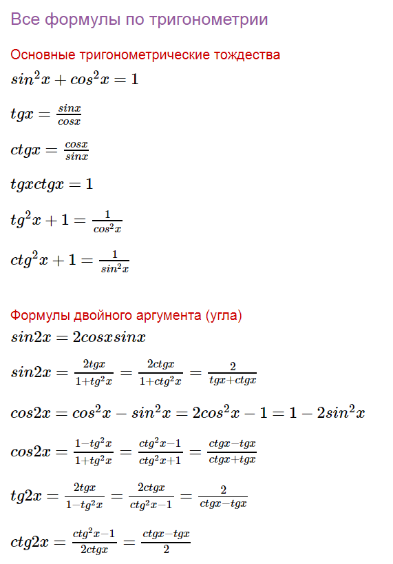
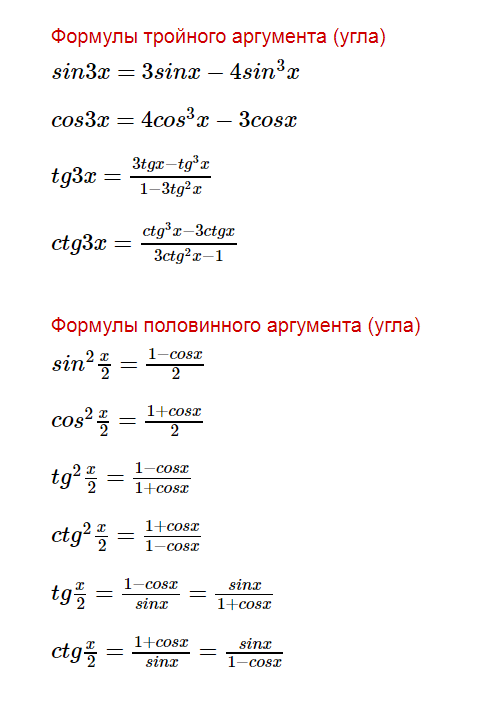
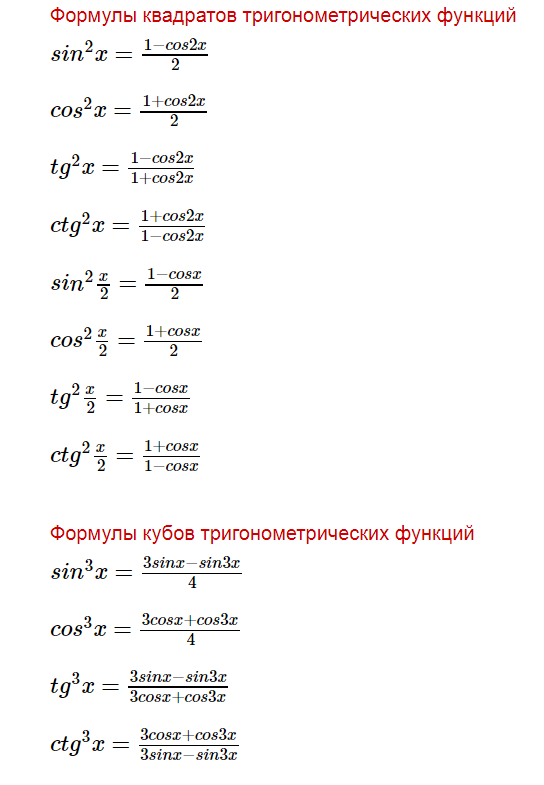

Наименьшее значение функции
Алгоритм нахождения наибольшего и наименьшего значения непрерывной функции на отрезке [a;b].
1)Находим область определения функции
2)Находим производную функции
3)найденный точки указать на координатной прямой
Из полученных значений функции выбираем наибольшее и наименьшее - они и будут искомыми наибольшим и наименьшим значениями функции соответственно.
тригонометрия
  